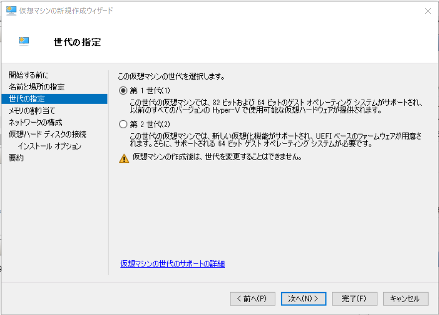
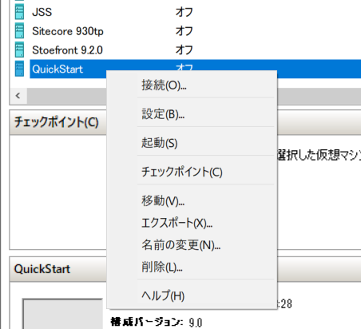

2.1. 必要システム¶
2.1.1. インストール環境の確認¶
Sitecore Experience Platform をインストールする際に必要システムは以下の通りです。
Windows Server 2019 / Windows 10 Professional
SQL Server 2019
SQL Server Management Studio
ここでは、Windows 10 Professional で提供されている Hyper-V の環境で作業を進めていきます。
2.1.2. Windows Server 2019 のインストール¶
Hyper-V マネージャを起動して、右側に表示されている操作から、「新規」－「仮想マシン」を選択します。

仮想マシンの名前を決めます。ここでは QuickStart という名前にします（特にこの名前には制限はありません）。
{kind=link}
今回作成する仮想マシンの世代は「第１世代」を選択します。
{kind=link}
仮想マシンのメモリを設定します。PC の容量に合わせて設定をしてください（推奨としては 8GB 以上）
{kind=link}
ネットワークの構成では、接続先を Default Switch にします。

仮想ハードディスクを作成しますが、作成するディレクトリを QuickStart に変更した画面です（標準のままでも問題ありません）。
{kind=link}
インストールオプションで、Windows Server 2019 Standard の ISO ファイルを指定します。
{kind=link}
完了ボタンを押します。
{kind=link}
作成した仮想マシンを右クリックで選択、接続します。
{kind=link}
マシンを起動します（起動をクリック）

Windows Server 2019 のインストールを進めていきます。途中、エディションが表示される場合は、 Windows Server 2019 Standard (デスクトップエクスペリエンス) を選択してください。
{kind=link}
あとは Windows Server 2019 のインストールを進めていきます。Windows update を適用して完了します。
2.1.3. SQL Server 2019 のインストール¶
SQL Server を今回は ISO ファイルからインストールを進めます。仮想マシンのコンソールのメニューから「メディア」－「DVD ドライブ」-「ディスクの挿入」を選択して、SQL Server の ISO ファイルを選択します。
{kind=link}
SQL Server 2019 インストールセンターの左メニューから「インストール」をクリックして、「SQL Server の新規スタンドアロンインストールを実行するか、既存のインストールに起動を追加」からインストールを開始します。
{kind=link}
ウィザードが起動するので、デフォルトのまま機能の選択の画面まで進めていきます。表示された際には、以下の項目をチェックしてください。
データベースエンジン
Machine Learning サービス（データベース内）
R
{kind=link}
インスタンスの構成は、今回は「既定のインスタンス」を選択して進めていきます。

サーバーの構成は標準の設定で進めていき、データベースエンジンの構成の画面に進みます。ここでは、「サーバーの構成」のタブにて、以下の項目を選択します。
混合モード（SQL Server 認証と Windows 認証）
パスワードの入力（sa のパスワード）
パスワードの確認入力（上記で入力したパスワード）
SQL Server 管理者の指定に関しては、「現在のユーザーの追加」をクリックして追加します。
{kind=link}
あとは標準の設定で進めていき、SQL Server のインストールを完了します。
{kind=link}